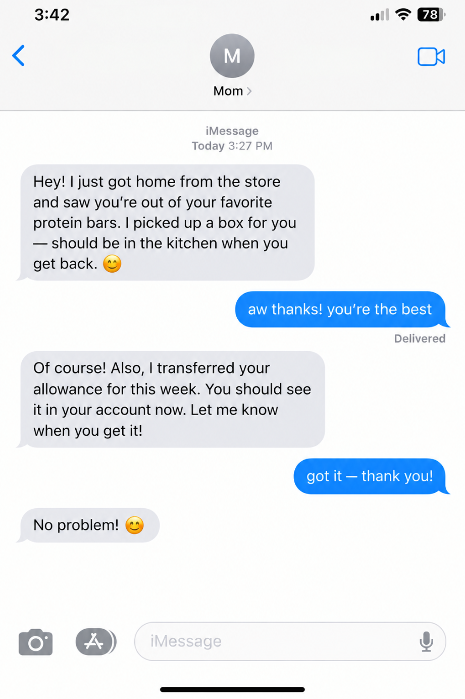
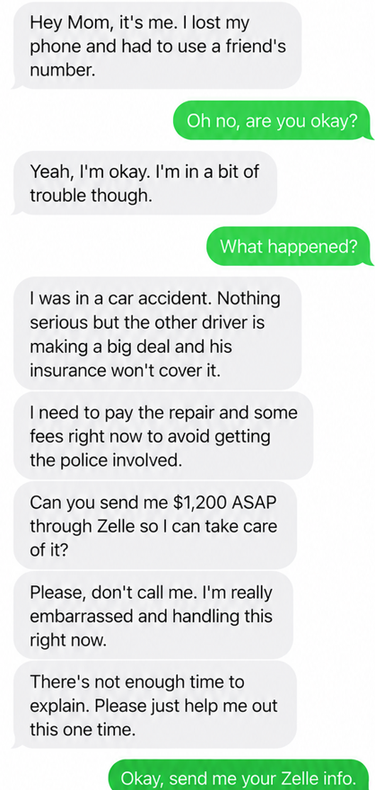

Legitimate Example

A relative contacts you about a problem and gives you time to call them back. You contact them using a phone number you already know and independently confirm what happened before deciding how to help.
Family emergency scams use fake emergencies
to trick people into sending money or revealing personal information.
Scammers pretend to be relatives or people helping a loved one in trouble.
They may claim that someone has been arrested, injured, or stranded.
Scammers may:
Knowing the warning signs and independently verifying the situation
can help you protect yourself and your family.

A relative contacts you about a problem and gives you time to call them back. You contact them using a phone number you already know and independently confirm what happened before deciding how to help.

A message claims that your grandchild is in jail and urgently needs money for bail. The sender insists that you pay immediately and not tell anyone else. These demands for urgency, secrecy, and money are major warning signs.
Remember: even if a message sounds convincing or a voice sounds familiar, verify the emergency independently.
Scammers create a convincing crisis to trigger fear and urgency. They then pressure you into sending money or sharing sensitive information before you have time to verify the story.
You receive a phone call, text, or online message from someone claiming to be a relative or someone assisting them.
The caller claims your loved one has been arrested, injured, stranded, or is facing another urgent problem.
The scammer demands immediate payment and may insist that you keep the situation secret or avoid contacting other relatives.
Family emergency scams may involve situations such as:
Anyone who cares about a family member can be targeted. Scammers may particularly exploit:
However, anyone can fall victim when a convincing emergency creates enough fear and pressure.
If you receive a suspicious emergency request:
Being targeted by a scam can happen to anyone. Acting quickly may help limit financial losses and protect others from similar attempts.
A family emergency scam occurs when someone pretends that a relative is in trouble and urgently needs money. Scammers use fear and emotional pressure to convince victims to pay before verifying the story.
Yes. Scammers can use AI voice-cloning technology to imitate someone's voice using audio samples. If a familiar voice makes an unexpected request for money, end the call and contact the person through a known number.
Stay calm and independently contact your relative or another trusted family member. If the caller claims to represent the police or a court, find the organization's official contact information yourself and verify the claim.
Do not send money until you have independently verified the emergency. A convincing story, familiar voice, or knowledge of personal details does not prove that the request is genuine.
Contact your bank or payment provider immediately and ask whether the payment can be stopped or reversed. Keep all evidence and report the incident to the appropriate authorities.